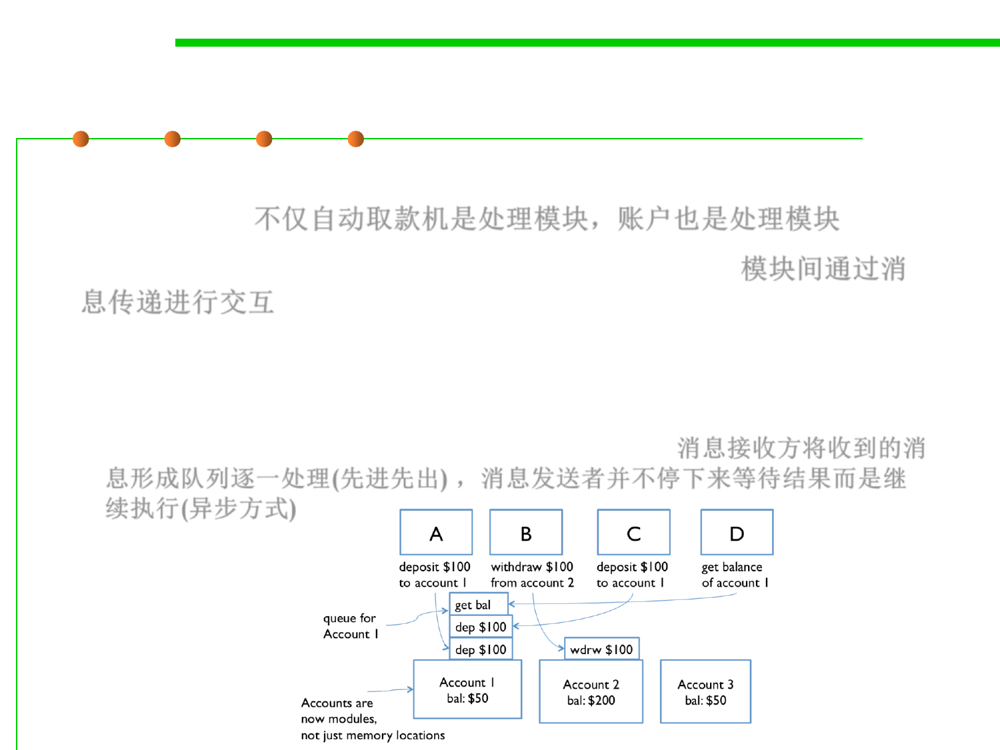

Message Passing Example
10.1 Concurrency and Thread-Safety
▪ Now not only are the cash machine modules, but the accounts are
modules, too. 不仅自动取款机是处理模块，账户也是处理模块
▪ Modules interact by sending messages to each other. 模块间通过消
息传递进行交互
– Incoming requests are placed in a queue to be handled one at a time.
– The sender doesn’t stop working while waiting for an answer to its
request. It handles more requests from its own queue. The reply to its
request eventually comes back as another message. 消息接收方将收到的消
息形成队列逐一处理(先进先出) ，消息发送者并不停下来等待结果而是继
续执行(异步方式)